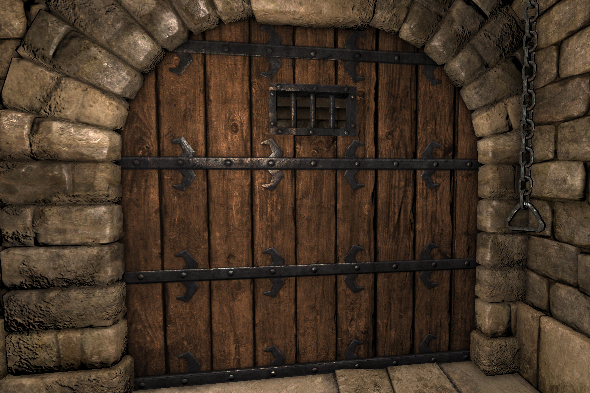

<!DOCTYPE html>
<html lang="en">
<head>
    <meta charset="UTF-8">
    <meta name="viewport" content="width=device-width, initial-scale=1.0">
    <meta http-equiv="X-UA-Compatible" content="ie=edge">
    <link rel="stylesheet" href="CSS/app.css">
    <title>Al'AventureCompagnons</title>

</head>
<body>

    <script>
        
        // var classA = [{
        //     nom: 'Marc',
        //     moyenne: 15
        // }, {
        //     nom: 'Marion',
        //     moyenne: 8
        // }, {
        //     nom: 'Antoine',
        //     moyenne: 4
        // }]

        // var classB = [{
        //     nom: 'Kelly',
        //     moyenne: 11
        // }, {
        //     nom: 'Sebastien',
        //     moyenne: 10
        // }, {
        //     nom: 'Laurie',
        //     moyenne: 3
        // }]

        // for (var i = 0; i < eleves.length; i++){
        //     if (eleves[i].moyenne < 10){
        //         console.log(eleves[i].nom)
        //     }
        // }
    
    // function afficherQuiALaMoyenne(eleves){
    //     for (var i = 0; i < eleves.length; i++){
    //         if (eleves[i].moyenne >= 10){
    //             console.log(eleves[i].nom + " a la moyenne");
    //         } 
    //     }
    // }

    // afficherQuiALaMoyenne(classA)
    // afficherQuiALaMoyenne(classB)

        var phrase = "Your bones don't break, mine do. That's clear. Your cells react to bacteria and viruses differently than mine. You don't get sick, I do. That's also clear. But for some reason, you and I react the exact same way to water. We swallow it too fast, we choke. We get some in our lungs, we drown. However unreal it may seem, we are connected, you and I. We're on the same curve, just on opposite ends. Well, the way they make shows is, they make one show. That show's called a pilot. Then they show that show to the people who make shows, and on the strength of that one show they decide if they're going to make more shows. Some pilots get picked and become television programs. Some don't, become nothing. She starred in one of the ones that became nothing."

        

    </script>


    <!-- <div class="borderblack" id="red"></div>
    <div class="borderblack" id="blue"></div>
    <div class="borderblack" id="green"></div> -->

    <!-- <div>
        <p class=""> </p>
    </div> -->
<!-- <div>
    
</div> -->

</body>
</html>